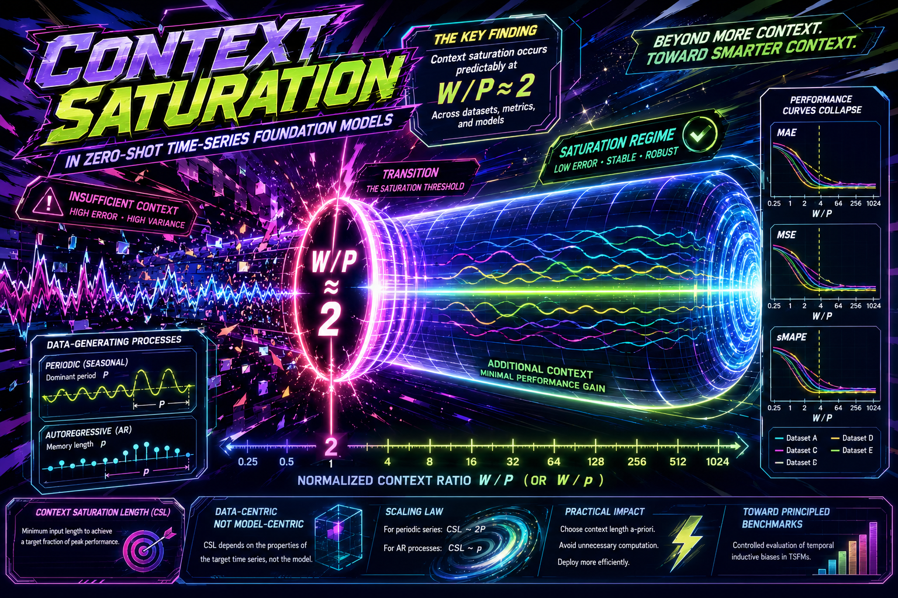

Context Saturation in Zero-Shot Time-Series Foundation Models

Miguel Nogales, Luca Butera, Alberto Ferrante, Cesare Alippi
Introduces context saturation length as a practical lens for choosing input length in zero-shot forecasting, showing that many periodic series saturate at roughly twice the dominant seasonal period.
Despite time series foundation models (TSFMs) supporting variable input lengths, they are usually evaluated using the longest input possible, depending on data availability and model input capacity. This practice risks conflating different factors impacting performance, and leaves end-users lacking principled guidelines for input length selection. To study the relationship between input length W and model performance, we introduce the context saturation length (CSL): the minimum input length required to achieve a target fraction of a model's peak forecasting performance. For time series with a dominant seasonal period P, we show that context saturation can be reliably achieved with at least W approximately 2P. This is supported by results on both synthetic and real-world benchmarks, where performance-to-input-length curves align when considering the period-normalized input length W/P. Additionally, we demonstrate similar behavior on time series generated by autoregressive processes, when normalizing the input length by the process memory length. Our findings demonstrate that, for periodic time series where the dominant period can be reliably estimated, the input length can be selected a-priori, avoiding hyper-parameter search, with negligible sacrifice of performance. Moreover, our work suggests that model-agnostic methodologies, based on the inherent characteristics of the target time series, can provide practical guidelines for input length selection, and lead to the design of principled benchmarks to evaluate TSFMs.